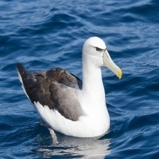

Albatross

¡Descubre a los hermosos Albatross!
- ¡Bienvenido a las Islas Galápagos, hogar de los majestuosos albatros!

- ¿Sabías que los albatros son pájaros increíbles que pueden volar muy, muy lejos sin cansarse? ¡Como superhéroes del cielo! 🌊🐦

- Su nombre científico es Diomedea exulans, pero puedes llamarlos "albatros errantes". ¡Un nombre divertido, verdad?
- Viven en los océanos, y a veces los encuentras en las Islas Galápagos, ¡especialmente en la Isla Española! 🏝️
- ¡Sorpresa! Los albatros son muy románticos, siempre están con la misma pareja. ¡Un amor que dura toda la vida!

- Están en peligro, así que todos debemos cuidarlos y respetar su espacio. ¡Así podemos seguir viéndolos por mucho tiempo más!
- ¡Espero que te haya gustado conocer a estos increíbles voladores! 🌈

¡Descubre a los Albatros!
- ¡Bienvenido a las Islas Galápagos, hogar de los majestuosos albatros!
- Nombre Científico: Diomedea exulans (albatros errante)
- ¿Sabías que los albatros son como los superhéroes del cielo? Pueden volar enormes distancias sin parar, ¡una maravilla de la naturaleza!
- Estado de Conservación: ¡Son tan especiales que están clasificados como vulnerables, así que cuidémoslos juntos!
- ¿Dónde verlos? En la Isla Española son las estrellas del espectáculo, especialmente durante la temporada de anidación.
- ¡Curiosidad turística! Los albatros son monógamos, ¡lo cual significa que eligen a una sola pareja y comparten su amor durante toda su vida! ¡Imagina presenciar este hermoso vínculo alado mientras exploras las Islas Galápagos!
- Recuerda disfrutar desde una distancia respetuosa para no interrumpir sus actividades diarias. ¡Buen viaje!
Información para biólogos:
- Nombre Científico: Diomedea exulans (albatros errante)
- Estado de Conservación: Vulnerable
- Distribución Geográfica: Amplia distribución en océanos, incluyendo las Galápagos (común en Española)
- Hábitat: Oceánico, costero
- Origen: Nativa
- Presencia en el Hábitat: Común
- Dieta: Mayormente se alimentan de peces y calamares
- Peso: Alrededor de 8 kg (puede variar según la región)
- Anidación: Principalmente en la Isla Española
- Cambios y Evolución: Impactado por el cambio climático; evolución a largo plazo afectada
- Biodiversidad: Crucial para la biodiversidad marina, aporta nutrientes mediante excremento
- Nombres Relacionados: No hay nombres étnicos específicos